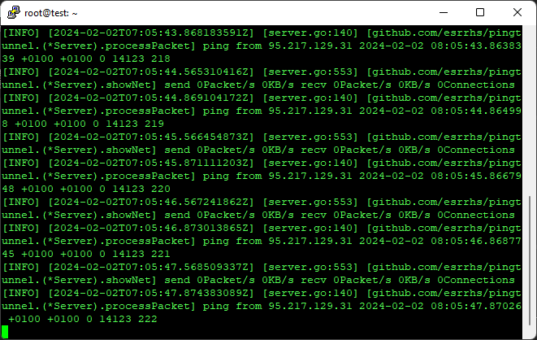

Есть интересная тулза (идея не нова), но не получилось завести, в статистике по нулям.
Нахожусь не в рф, тестил на hetzner cloud, может у кого-нибудь получиться завести его?
Сервер:
./pingtunnel -type server -key 1337

Клиент:
{kind=link}
Следующее решение оказалось рабочим, оставлю тут
Нужно еще sysctl net.ipv4.icmp_echo_ignore_all=1, скорее всего.
В первую очередь перепроверял, не помогло. В любом случае, рабочее решение есть.
У меня всё получилось  Вот правда скорость какая-то подозрительно астрономическая для ping туннеля
Вот правда скорость какая-то подозрительно астрономическая для ping туннеля 
{kind=link}
На стороне сервера достаточно прописать в терминале …/pingtunnel -type server -key *******
А вот рабочий вариант настроек клиента на Windows 10 (для работы, возможно, в системе должна быть установлена библиотека Npcap):
{kind=link}
Так он в обычные icmp TCP/ip пакеты заворачивает в какой нибудь обычный tcp или quic с контролем перегрузок
net.ipv4.icmp_echo_ignore_all=1 должно быть и на сервере и на клиенте? Без этого никак?
С этим заработало. Но ведь это же не ICMP, а TCP, судя по Wireshark. И порты есть, а в ICMP нет портов.
Заявлено наоборот, TCP пакеты в ICMP туннель “PingTunnel — утилита для передачи TCP/UDP-трафика через ICMP.”
В моём случае разницы не заметил, работало и так и так.
По идеи должен быть TCP пакет в ICMP пакете, я так глубоко не смотрел. Тут вот есть хорошая статья с “кишками” про пинг туннели  : Пакуем весь трафик в Ping message, чтобы не платить за интернет | ICMP NAT traversal / Хабр
: Пакуем весь трафик в Ping message, чтобы не платить за интернет | ICMP NAT traversal / Хабр
{kind=link}